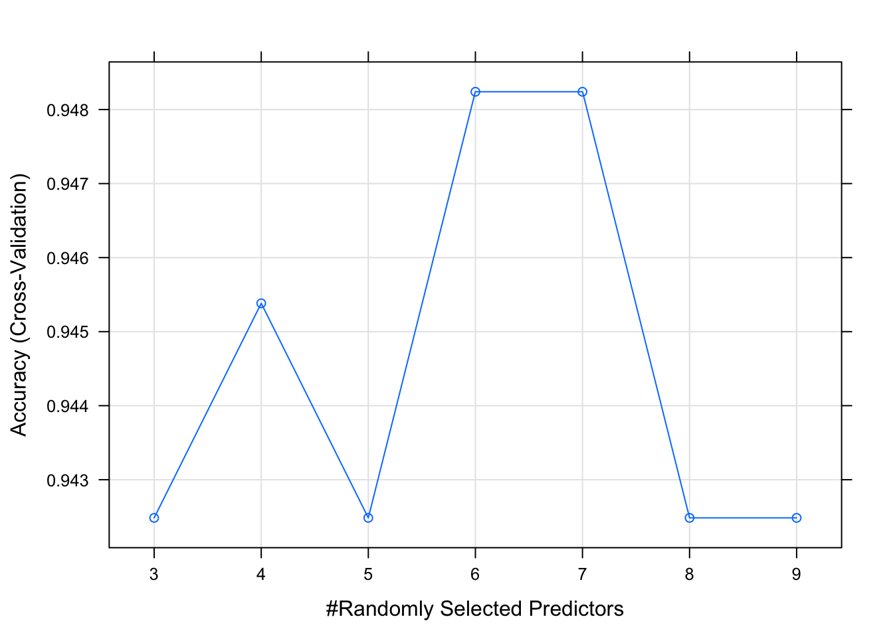
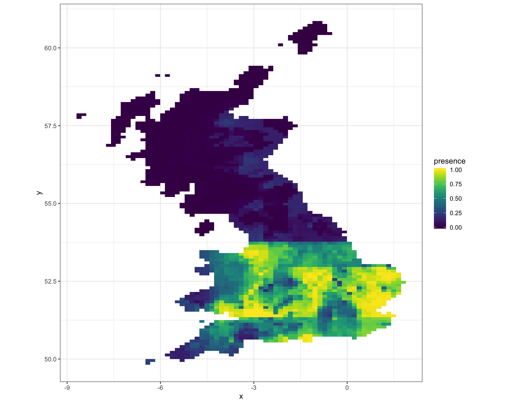

Species Distribution Modelling
# Load libraries
library(tidyverse)
library(lubridate)
library(caret)
library(raster)
library(reshape2)
library(viridis)
# Clear environment and set working directory
rm(list = ls()) We can use the Global Biodiversity Information Facility (GBIF) to gather presence records for the migratory hoverfly Volucella zonaria, also known as the hornet mimic hoverfly. In Great Britain, it was only known from two specimens prior to 1940, so was regarded as rare. Since then, it has become increasingly widespread in many parts of the South and South East England, often in association with parks and gardens, where adults are usually seen visiting flowers. Elsewhere in England, only a few scattered records exist.
# load the data from a query to GBIF, for V. Zonaria
gbif_response <- read_rds("~/Documents/GitHub/ComputationalEcology/data_analysis_files/clim_data/gbif_volucella_zonaria.rds")
# Create presence records across decades
zonaria_clean <- gbif_response$data %>%
# get decade of record from eventDate
mutate(decade = eventDate %>%
ymd_hms() %>%
round_date("10y") %>%
year() %>%
as.numeric()) %>%
rename(y = decimalLatitude,
x = decimalLongitude) %>%
# clean data using metadata filters
filter(
# only records with no issues
issues == "" &
# let's take data from 2000 to 2020
decade %in% c(2010,2020)) %>%
# retain only relevant variables
dplyr::select(x, y, decade) %>% arrange(decade)Now we need to grab some environmental data. For this vignette we will use the worldclim database as this is directly available via the raster package. We can download 19 bioclimatic variables at 10’ resolution. They are coded as follows:
- BIO1 = Annual Mean Temperature
- BIO2 = Mean Diurnal Range (Mean of monthly (max temp - min temp))
- BIO3 = Isothermality (BIO2/BIO7) (* 100)
- BIO4 = Temperature Seasonality (standard deviation *100)
- BIO5 = Max Temperature of Warmest Month
- BIO6 = Min Temperature of Coldest Month
- BIO7 = Temperature Annual Range (BIO5-BIO6)
- BIO8 = Mean Temperature of Wettest Quarter
- BIO9 = Mean Temperature of Driest Quarter
- BIO10 = Mean Temperature of Warmest Quarter
- BIO11 = Mean Temperature of Coldest Quarter
- BIO12 = Annual Precipitation
- BIO13 = Precipitation of Wettest Month
- BIO14 = Precipitation of Driest Month
- BIO15 = Precipitation Seasonality (Coefficient of Variation)
- BIO16 = Precipitation of Wettest Quarter
- BIO17 = Precipitation of Driest Quarter
- BIO18 = Precipitation of Warmest Quarter
- BIO19 = Precipitation of Coldest Quarter
Let’s download data for current bioclim and future climate change scenarios:
# Load raster background for UK
bg <- raster("data_analysis_files/UK_bg.grd")
# Reproject to lat/lon
bg <- projectRaster(bg, crs= "+proj=longlat +ellps=WGS84 +datum=WGS84 +no_defs")
# UK extent in lon/lat coordinates
ext_uk <- c(-12, 3, 48, 62)
# Get climate data for current date
filepath = "~/Documents/GitHub/ComputationalEcology/data_analysis_files/clim_data/"
bio_curr <- getData('worldclim', var='bio', download=T, lon=-5, lat=55, res=5, path=filepath)
# Crop and reproject current climate
bio_curr <- crop(bio_curr, ext_uk)
bio_curr <- projectRaster(bio_curr, bg)
bio_curr <- resample(bio_curr, bg)
bio_curr <- mask(bio_curr, bg)We can plot the current bioclim data - all 19 covariates:
# Plot the bioclim covariates - we'll use ggplot, as raster plot function not as nice output
# Function to generate individual plots
plot_bioclim <- function(df, name) {
ggplot(data = df, aes(x=x, y=y, fill = value)) +
geom_tile() +
coord_equal() +
scale_fill_viridis(name = name) +
theme(
plot.margin = rep(unit(0,"null"),4),
panel.spacing = unit(0,"null"),
legend.key.width = unit(0.01,"null")
) +
theme_bw()
}
# extract all bioclim values by xy
nested_bioclim_plots <- data.frame(rasterToPoints(bio_curr)) %>%
# Create single gouping variable by which to facet chart
melt(id = c("x","y")) %>%
# Nest data by bioclim variable
nest(-variable) %>%
# Create individual ggplots
mutate(plots = map2(.x = data,
.y = variable,
.f = plot_bioclim))
# Render plots
library(gridExtra)
margin = theme(plot.margin = rep(unit(0,"null"),4))
gridExtra::grid.arrange(grobs = nested_bioclim_plots$plots,
top="Current UK Bioclim variables ",
ncol = 2,
margin
)
For each bioclim variable, we want to extract its value for the location of each V. zonaria observation. We also need to create pesudo-absence data - this represents locations where no observations were made. The covariates then need to be joined to the location of each location.
# Extract bioclim variables using long/lat
df_presence <- raster::extract(bio_curr, zonaria_clean[1:2]) %>%
# Add extracted bioclim variables to observation data
cbind(zonaria_clean) %>%
# Mark observation data as presence records
mutate(presence = 1) %>%
# We dont need decade anymore
dplyr::select(-decade)
# Function to pick raster cells at random from bioclim layers
raster_random_sample <- function(bio_data, n_samples) {
raster::sampleRandom(
x = bio_data,
size = n_samples,
na.rm = TRUE,
xy = TRUE)
}
# Sample background points (psedo absent?)
df_absence <- raster_random_sample(bio_curr, 500) %>%
as.data.frame() %>%
# Mark as background data
mutate(presence = 0)
# Create single dataframe for all data
df_zonaria <- rbind(df_presence,df_absence)Now we have joined our environmental and observation data together, we can begin to build a species distribution model. First we need to create a categorical response variable as we want to model presence v absence in space:
# last pre-processing step
df_modelling <- df_zonaria %>%
# caret requires a factorial response variable for classification
mutate(presence = case_when(
presence == 1 ~ "presence",
presence == 0 ~ "absence") %>%
as.factor()) %>%
# drop all observations with NA variables
na.omit()Then we partition the available data - one set for training the other for testing:
# Create an index to randomly partion presence and absence observations
inTrain <- createDataPartition(y = df_modelling$presence, p = 0.7, list = FALSE)
df_train <- df_modelling[ inTrain,]
df_test <- df_modelling[-inTrain,]Before we fit the a machine learning model, we should look at the variabele importance. We can do this using the caret package, which has a function to evaluate covariate importance.
# Use Recursive Feature Elimintation (RFE) to determine significan covariates
set.seed(100)
# Select the grouping of variables to test
subsets <- c(1:5, 10, 15, 19)
# Define the control using a random forest selction function
ctrl <- rfeControl(functions = rfFuncs,
method = "repeatedcv",
repeats = 3,
verbose = FALSE)
results <- rfe(x=df_modelling[1:19],
y=df_modelling$presence,
sizes = subsets,
rfeControl = ctrl)
# Print summart of results
print(results)##
## Recursive feature selection
##
## Outer resampling method: Cross-Validated (10 fold, repeated 3 times)
##
## Resampling performance over subset size:
##
## Variables Accuracy Kappa AccuracySD KappaSD Selected
## 1 0.8454 0.6913 0.03500 0.06988
## 2 0.8675 0.7354 0.04166 0.08320
## 3 0.8747 0.7497 0.04361 0.08709
## 4 0.8760 0.7523 0.04103 0.08184
## 5 0.8784 0.7570 0.03960 0.07908
## 10 0.8822 0.7645 0.04032 0.08050
## 15 0.8818 0.7639 0.03794 0.07575
## 19 0.8825 0.7652 0.03797 0.07576 *
##
## The top 5 variables (out of 19):
## bio10, bio5, bio1, bio2, bio4# Plot the results
plot(results, type=c("g", "o"))
Let’s use the first five most significant variables in our model. We’ll fit the model using a regularised random forest (RRF):
library(randomForest)
# take the top five variables from the feature importance
opt_vars <- results$optVariables
# Recut the modelling data
df_modelling <- cbind(df_modelling[opt_vars], df_modelling %>% dplyr::select(x,y,presence))
# Use five fold cross validation, repeated twice
tunecontrol <- trainControl(
method = 'repeatedcv',
number = 5,
repeats = 2,
search = "grid")
tunegrid <- expand.grid(.mtry=c(3:9))
# for reproducibility
set.seed(12345)
# actual model build
model_fit <- train(
presence ~ .,
data = df_modelling,
method = "rf",
metric = "Accuracy",
tuneGrid = tunegrid,
trControl = tunecontrol)
print(model_fit)## Random Forest
##
## 979 samples
## 21 predictor
## 2 classes: 'absence', 'presence'
##
## No pre-processing
## Resampling: Cross-Validated (5 fold, repeated 2 times)
## Summary of sample sizes: 784, 783, 783, 783, 783, 783, ...
## Resampling results across tuning parameters:
##
## mtry Accuracy Kappa
## 3 0.9008974 0.8020009
## 4 0.9003898 0.8009532
## 5 0.9034589 0.8070792
## 6 0.9024385 0.8050259
## 7 0.9019309 0.8039883
## 8 0.9019309 0.8039972
## 9 0.9003951 0.8009303
##
## Accuracy was used to select the optimal model using the largest value.
## The final value used for the model was mtry = 5.plot(model_fit)
Now we can now make a prediction for the current species distribution range for V. zonaria, using the bioclim covariates.
# Generate species distribution df given raster of environmental variables and sdm
predict_dist <- function(r_bio, sdm){
# Generate distribution data to run model on
dist_dat <- data.frame(rasterToPoints(r_bio))
# Create a probability of presence/absence raster
r_pred <- rasterFromXYZ(cbind(
# Coordinates to make prediction from
dist_dat[1:2],
# Predict with RRF species distribution model
predict(model_fit,
# Use covariates to run model against
dist_dat,
# Type of response variable
type='prob'))
)
# Create spatial dataframe for plotting
df_prob_presence <- as(r_pred[[2]], "SpatialPixelsDataFrame") %>%
as.data.frame()
# Return probability of presence raster
return(df_prob_presence)
}
# Generate sdm for current climate vars
curr_plot <- predict_dist(bio_curr, model_fit)
# Plot scenarios
curr_plot %>%
ggplot() +
geom_tile(aes(x=x, y=y, fill=presence)) +
coord_equal() +
scale_fill_viridis() +
theme_bw()
We see the range is laregely confied to south of the Lake District, with significant hot spots around East Anglia and the Bristol Channel.